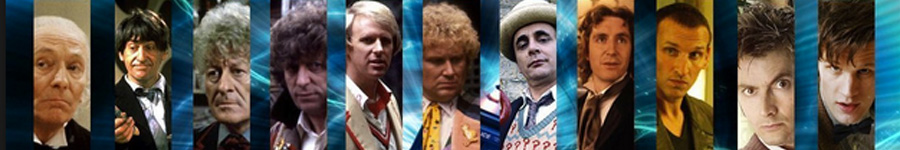
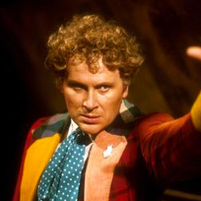

| HOME | The Doctors | The Companions | The Villians |
|  | |||
The Doctors
|
The Seventh Doctor McCoy became the Seventh Doctor after taking over the lead role in Doctor Who in 1987 from Colin Baker. He remained on the series until it ended in 1989, ending with Survival (see List of Doctor Who serials). As Baker declined the invitation to film the regeneration scene, McCoy briefly wore a wig and appeared, face-down, as the 6th Doctor. He played the Doctor in the 1993 charity special Dimensions in Time, and again in 1996, appearing in the beginning of the Doctor Who television movie starring Paul McGann as the Eighth Doctor. In his first series, McCoy, a comedy actor, portrayed the character with a degree of clown-like humour, but script editor Andrew Cartmel soon changed that when fans argued that the character (and plots) were becoming increasingly lightweight. The Seventh Doctor developed into a much darker figure than any of his earlier incarnations, manipulating people like chess pieces and always seeming to be playing a deeper game. A distinguishing feature of McCoy's performances was his manner of speech. He used his natural slight Scottish accent and rolled his rs. At the start of his tenure he used proverbs and sayings adapted to his own ends (e.g. "There's many a slap twixt cup and lap" — Delta and the Bannermen), although this characteristic was phased out during the later, darker series of his tenure. In 1990, readers of Doctor Who Magazine voted McCoy's Doctor "Best Doctor", over perennial favourite Tom Baker.[9] Peter Davison, McCoy and Colin Baker at the Doctor Who 50th Anniversary Celebration Weekend. In November 2013 McCoy co-starred in the one-off 50th anniversary comedy homage The Five(ish) Doctors Reboot.[10] |